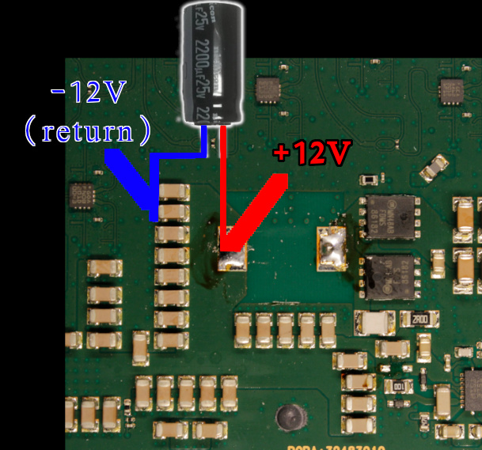
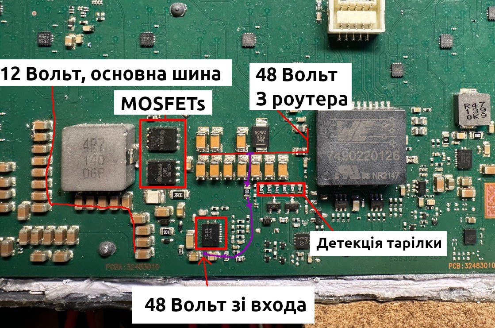

Today it has become popular to convert rectangular Starlink terminals into a flat “automotive” version.
There are tons of projects like this one or this. People cut the terminal case and pack it in a custom flat housing. Typical usage: RV.
An essential part of such modifications is the change of the power scheme.
In the automotive version, powering the terminal from 230/110 AC is inefficient. Power supply modification includes a custom PoE injector and DC/DC converter (12V – > 48V). I propose an even more efficient power supply scheme without additional voltage conversions.
Please note that most information below applies only to current rectangular rev3_protoX terminals.
Rev3 terminal PoE circuit
Let’s look at the PoE schematic on the board.
{kind=link}
Here we can see Ethernet/Power connector, PoE transformer, current measurement circuit (0.05R shunt + AD8541 opamp), and primary DC/DC converter L3751. Plus, the PoE detection circuit and PD controller.

Here is the block diagram:
{kind=link}
The primary internal power bus is 12V. All other Dishy’s voltage regulators feed from this bus. Thus we can bypass the input voltage regulator and provide 12V directly to the primary bus.
To protect the primary voltage regulator from reverse current, we need to disconnect it from the 12V bus. This can be done simply by removing the big inductor and feedback diode. You can see them in the picture below.
{kind=link}
I do not recommend removing L3751 IC or MOSFETs. It’s more complicated, and there is a risk of messing up.
You may have noticed that we are also bypassing the current measurement circuit. This is okay. The Dishy firmware doesn’t care about zero consumption in runtime.
12V connection
After the components removing it’s safe to connect external PSU wires directly to the board. The most optimal connection point is the output ceramic capacitors array.
I highly recommend connecting an electrolytic capacitor in parallel.
 (-12 it’s just a zero point or ground. Not some negative rail)
{kind=link}
The minimal capacitance is 470 µF when you have relatively short wires from the 12V source. If your wires are a few meters long, you can use a 2200 µF capacitor. I tested with 5 meters 12AWG cables. The capacitor voltage rating should be 25V.
{kind=link}
Ethernet cable connected directly to a host/custom router with 8P8C/RJ45.
Don’t connect the reworked Dishy to any PoE power supply or Gen2 Starlink router.
Measurements
I connected my shelf multimeter to the 12V rail and used the ut-reader to collect and plot current measurements.

As you can see, Dishy jumps to 7A, and the median consumption is around 5-6A, depending on the operation. The values can change very quickly, so your power supply must be able to handle sudden surges in consumption. When stowed, Dishy consumes a constant 1.1A.
The minimum supply voltage is 10V, and the absolute maximum is 15V. Please, do not exceed 15V value. It might damage your Dishy.
Please note that powering the Dishy from the car’s 12V line might be dangerous when ICE is running. The voltage levels might be pretty unstable.
Also, Tesla’s low voltage line is 16V instead of 12V (Li-ion low voltage battery). Consider this if you plan to power your Dishy from the modern Tesla car.
Thanks for reading.
Amazing work. Would love to see a chart that compares power efficiency. Eg 48v PoE vs 12v
Also any possibility to add a photo close up of the output ceramic capacitors array and removed inductor pads, to show where you connected 12v+ and 12v-(Ground)?
I agree! A clear picture of the 12v, capacitor connection would be appreciated very much. I will do this conversion this weekend if the pic is supplied. Thanks mate.
Ready 🙂
Done!
Conversion complete, working beautifully.
Averaging a power usage of 20-45W at 13.52V (Starlink data plan currently paused).
Dishy SW version: e055302d-93ee-44c0-9f18-4d927a6ee54e.uterm.release
Very impressive. Thanks for the research and info 👏
and successfully updated:
4c0c479d-d59a-4a0b-a7bc-fc4fc0bbe55d.uterm.release
😊
Great!
Excellent. Any info on the High Performance Dish?
It’s way more complicated. There are two identical PoE DC downconverters inside. They work in parallel powering different parts of the PCB. I tried the same trick with the HP, but it’s not starting. I think some “ENABLE” signal is required. More research is needed.
You mention “When stowed, Dishy consumes a constant 1.1A”
What is ‘stowed’ state?
Is this on but no data transfer, or something else?
This is the state when you press “Stow” in your mobile app, and Starlink is actually “stowed” to the transport state 🙂
The satellite link is not active in this state.
Ok, thanks 👍
Such mode is obsolete in my specific scenario. Flat mount, RV install. Will be using your 12v mod.
Hi Oleg. I followed your instructions and cannot get the router to see dishy now. I am getting a “no wan connection” error from the router…I tested the ethernet leads, and they are all good. I attempted to revert it back to original, and I damaged one side of the miniature feedback diode! Any idea why the router can’t see Starlink, and what type of diode could be used to complete the repair?
Hello. Unfortunately, the original part number is unknown. You can try to put SOD-323 Schottky there, like this one: https://eu.mouser.com/ProductDetail/Diodes-Incorporated/BAT43WS-7-F?qs=m%2FDc%252BknW%252B3niQrMOMf2TDA%3D%3D
About Ethernet. Make sure that you use the t568b pinout.
Also, verify that your PSU is capable of providing enough spike current. A typical problem is when PSU cannot provide enough current and Dishy restarts on boot/Ethernet startup.
Update! The problem seems to have been the termination of the ethernet cable! I was sure that I had followed your instructions to the letter, but error are always a possibility. Thanks for the reply, and a great hack!
I have finally hooked up a 3rd party router to the modded Starlink and I am getting an orange (cable issue) internet LED. Is the main cable from the starlink board supposed to be t568b pinout as well?
Yes. They used t568b everywhere.
i got some problem,
I assume this will also stop the motors from working, if they are still present and connected?
Motors are powered from this 12V line so that they will function.
Do motors have external logic board, or it that second connector are dummy bidirectional lines feeding two motors?
I was wondering if we could utilize that second connector to feed 12V through it, if those 12V are magically at the same bus.
Otherwise…
Is there a much better location to solder in “-12V/ground”? Is it should be almost everywhere? No?
Another idea, in theory I could utilize POE with dummy passive 12V injector (for analog cameras), just need to push enough Amps, let’s pretend the ethernet cable will be super short to handle all the power correctly without overheating or loses, etc. Antenna needs 48V via fat power wires just because 12V will never make it through 75 feet.
Of course, I have to “redirect” the power to the new soldered point. Just +12V? or -12V/ground also? Or some bypass modification could be done easier? that soldered input just doesn’t look so stable and solid at all.
thanks
There is no additional board. Motors are just simple DC motors: https://www.ecutool.com/products/mercedes-benz-bmw-porsche-peugeot-toureg-folding-rearview-mirror-motor?VariantsId=11310
You can’t use this connector to feed the 12V. This is the output of a DC motors driver IC.
Technically, you can connect to any 12V bus point, where you can see a bunch of ceramic caps. But the input point is the most convenient.
There is a different pinout, and your PoE injector will not be able to sustain more amps. You will burn your Starlink and/or PoE injector.
You can use only approved Starlink PoE injectors: DishyPowa, AB Production, Boondocker, or Yaosheng.
Pardon my ignorance and lack of electrical engineering knowledge/understanding. With this modification you have totally eliminated 48v for the dish? Does the dish now function completely on 12v? I am trying to understand why SL would require 48v if everything can work on 12v. So, now you supply 12v to the dish and then you connect from the dish via ethernet cable to a router (not the original SL router).
Hello. The internal Dishy primary voltage is 12V, but the PoE voltage is 48V. It’s all about the power and length of the cable.
They need to transfer much power with less current over the long Ethernet cable. 12V can’t provide enough power unless you use a massive amount of current, which might be dangerous for the cable, Ethernet transformers, and connectors.
Can similar modification e done on the round dish?
Yes, it’s possible. The principle is the same. But I never did it. Also, it requires more power.
Olá, aprendi muito com suas engenharias reversas nas starlink, obrigado. Estamos cortando e colocando as antenas nos veículos. Uma delas voltou para conserto, com um sintoma estranho. Ela funciona o dishy normalmente, mas não conecta. No aplicativo no modo depuração, ele mostra em vermelho a opção “sinal fraco” e ao clicar em informações ele fala que o ruído está acima de 3 dB. Eu não faço idéia do que está causando este ruído. Pode me dar uma dica ?
Abraço
I find your solution with a single 12V supply very clever! Now, how about putting a DPDT relay in the mix, which activates when external 12V is available and switches the inductor and diode out of the circuit, and if no 12V is present, relay is de-energised and inductor and coil are re-connected via the changeover contact pair? This would allow to use either external 12V or PoE, with 12V having override priority. What do you think?
Hi, Oleg, this is brilliant. I plan to use this in a manned balloon where minimal power consumption is paramount as we fly for many days. There are some questions I have that I didn’t see answers for:
1. What improvement in power consumption (or efficiency) is realized by avoiding the 48V->12V? How about the 12V->48V?
2. Are the heaters on the 48V circuit (thus disabled) or are they on the 12V circuit & functional?
3. You mention the PSU not providing enough spike current. Is that what the electrolytic cap is for? If using a LiFEPO4 battery, would that be sufficient with short (18 inch) battery leads?
Thanks very much for sharing your wisdom!
Hi Noah,
12V->48V depends on type of your PSU/injector.
In the case of older round Dishy and high perf Dishy, there are heat traces that run from 12V (round Dishy) and 49V (HP).
For a stable 12v supply from a vehicle, how about using one of the wide-range 12v to 12v Buck/Boost converters, as used for running LCD TVs and the like?
Something like this: http://www.amazon.com/dp/B08BRN3R5Y/
Yeah, should be good.
This is awesome and perfect timing for my project. I am planning to supply 12v power to this from my van, but also have a LiPo battery bank supply power when I need the portability. 12v will be much easier for me.
Do you know if there is any 5v power on the board that I could tap into to run a small wifi router (microUSB)? This would allow me to have everything built into a single enclosure and would be perfect.
Unfortunately, there is no 5V. Available voltages: 12V, 3.3V, 1.8V, 1.0V
Thanks for the response. I ended up using a small 5v converter tied to the new 12v leads that I soldered on the pad and capacitors as you detailed. Thank you for the great write up, the hack went smoothly and I should have it finished tomorrow when the taller enclosure pieces print.
I am wanting to power my starlink from a custom battery pack made from 18650 cells, would you recommend the 3s (11.1v) or 4s (14.8v)configuration? I could always add a buck converter to ensure it doesnt go over 12v, but wondering if you had an opinion on this.
I would recommend 14.8. It’s in a safe range and could provide enough power for extended periods.
Hello, nice information
I have one question, you said “Please note that powering the Dishy from the car’s 12V line might be dangerous when ICE is running”, what do you mean by “ICE”?
Thank you
Internal Combustion Engine, a regular car.
Hello, could Oleg put the main voltages of the antenna for conference and possible problem detection? when you have time
The l3751 is not easy to find around here, do you have any tips on how I can replace it? Is there a way to put another regular stepdown separately to make the 5v and 12v that is on it?
Oleg 😕
Oleg,
Awesome work mate, Ive modified mine and has been solid for 2 months. ive now just changed my wifi/router and im getting disconnected and booting sequence over 5~10 mins . Ive checked the current and on initial powering on is 80 mA then ramps up to 450mA real fast but hangs there for a long time still showing disconnected. ? it gets to orientation, connecting then disconnects.
I will be trying some other fault finding but just reaching out to see what your experience has been.
It’s possible that your Dishy turns on the heating. This creates a power spike that your PSU or wires can’t handle for some reason. You can try to play with the capacitor value near the Dishy.
Thanks , sorry I didn’t explain in connected to directly to a 12v deep cycle battery and the cable run is only about 7 meters. What value of capacitor should I consider. I’ve used your suggestion of 2200uf 25v
Thanks to Oleg Work, I just finished the modification to feed the Starlink Terminal with 12V (without Motors) because is a flat dish now.
I also Feed the Starlink Router with 12V, and add a Battery for both devices to have the posibility to work completly offline.
The modification works perfectly. Is at 3.5 to 4 Amps with the Router included.
I have to ask if there is a way to have an ethernet port when there is only 12v?
I have the Starlink Ethernet adapter, of course doesent work beacuse I don’t have POE.
Excelent Work Oleg!
Hello. You can connect any suitable 3rd router directly to the Starlink Ethernet. The Starlink router is not mandatory.
Just cut the cable and crimp RJ45 as T568B. Your router should be configured to run in DHCP client mode. It will get an IP as soon as the Dishy goes online.
Hello friend, I wanted to ask a question before doing my test so I don’t end up damaging my dish, I’m powering the dish with 12 volts, and the starlink router directly with 12 volts. I can continue using the cable normally that comes out of the dish and connect it to the starlink router. I want to use my flat dish as you reported.
Hello,
Yes. You can use the standard cable and the router.
Is it possible for me to use it with a reworked starlink router, being powered only on the 12v line and leaving the 48v line without power?
Yes, sure. But it’s better to rework Starlink cable to RJ45 and use any good router instead of Starlink 🙂
I followed your tutorial but dish is stuck on startup, I’ve left it on for more than 20 minutes, in the starlink app in debugging data it appears with increasing uptime, but it gets stuck on startup.
I followed your tutorial to the letter, the only thing different is that I used a 16v 1500uf capacitor, I tried to use two capacitors in parallel but the problem persisted, do you have any tips?
Could you share “Debug data” from your Dish?
I undid the modification for testing, the antenna booted normally.
What I can add is that dish is not activated and is also outdated, it is a new starlink.
In the debugging part it showed GPS ok, only the signal that showed weak in red. Could it be something related to updating? Should I update it before redoing the change?
The Dishy firmware version is important. It does not depend on this rework, so you can leave it as is. But if your firmware is quite old, connecting might take longer. In the case of really old firmware (>= ~1.5 years), you may need to contact SpaceX support and ask them to push an update on your Dishy. Sure, don’t tell them about any mods.
So, with a propper POE intector for starlink (like https://aliexpress.com/item/1005006628234006.html), should it work with 12V input (no need for DC-DC converter)? I don’t have snow where i live, so no need for snow melt (it’s always disabled).
So, with a propper POE intector and cable adapter for starlink (like https://aliexpress.com/item/1005006628234006.html https://pt.aliexpress.com/item/1005006628545383.html), should it work with 12V input (no need for DC-DC converter)? I don’t have snow where i live, so no need for snow melt (it’s always disabled).
With this PoE injector you need a 48V source, but 12V is not needed. Just crimp the RJ45 cable.
I would recommend to use this injector with direct 12V input: https://www.amazon.com/dp/B0CW3NQMJ7?ref=emc_s_m_5_i_atc
Thank you. I thought maybe 12V would be enough with no snow melting. I had a hope, since L3751 supports input from 6 V to 75 V, to input PoE with 12V.
I had not realized this model was DC DC converter. But it is kind of expensive. I already have a UPS. I just wanted to optimize consumption and get more autonomy.
Friend, I’m from Brazil and I would like to have your contact to send you some videos and references of Starlinks that can be found in my store. Do you know where the ID is in the Starlink board?
Oleg, Could you please do a YT video on this MOD? Thanks, Ben S/V DAWN
Oleg, excellent to share your work repairing the Starlink terminals, I read your web page but can’t find the information, so I ask:
What kind of glue do you use to put together the terminals once repaired?
Thank you for your time
Hello. I’m using automotive sealant (for headlights).
Hello Oleg,
thank you for your work, it is very helpful, is there a Hardware way to deactivate permanently the Snow Melt function on Dish Gen2?
Best Regards
Olá oleg, estou com 2 gen 2 e fiz a modificação porém conectei em um roteador starlink gen 2 sem efetuar modificação, iniciou na primeira vez porém na 2 a placa já não iniciou, esta sendo alimentada pela fonte externa 12v. Posso usar um roteador normal com a antena sendo alimentada em 12v, cortarei o cabo original e onde vai para o roteador colocarei um rj45 no modo 5678b.
Hello Oleg
your work, it is very helpful, my starlink reboot every 2 minutes ,and the inductor 4R7 very hot, the volt in output capacitor rail is 11V, i need your advise . Thank you very much .
Best Regards
Hello. 4R7 should be hot, it’s ok. Could you share “debug data” from your starlink?
Hello Oleg!
“Please note that powering the Dishy from the car’s 12V line might be dangerous when ICE is running. The voltage levels might be pretty unstable.”
can this be fixed with a 12v regulator? im planning on using this setup on my truck for long travels, if not what other solutions can you recommend, thanks! and great work!
Hello! Sure, you can use 12V to 12V regulator to stabilize the voltage.
https://www.amazon.com/Voltage-Regulator-Converter-Stabilizer-Waterproof/dp/B08BXZC1B2
Olá amigo, esse regulador de tensão também teria a mesma eficiencia?
https://www.eletrogate.com/modulo-regulador-de-tensao-step-down-lm2596?utm_source=Site&utm_medium=GoogleMerchant&utm_campaign=GoogleMerchant&utm_source=google&utm_medium=cpc&utm_campaign=%5BMC4%5D_%5BG%5D_%5BPMax%5D_ArduinoRoboticaSensoresModuloss&utm_content=&utm_term=&gad_source=1&gclid=CjwKCAjwupGyBhBBEiwA0UcqaIeUvDy01O6IAEctBX_xjXTft_jdkZmq1Sul0xwaeBlzpnR4IkOtGhoCoWkQAvD_BwE
No. It’s too weak and doesn’t have enough power and efficiency.
Доброго дня! Олег підкажіть будь ласка, в старлінк потрапила волога, я його розкрив, вичистив изопропанолом, висушив, використовував ваш метод 12в живлення для перевірки працездатності антени, але якщо використовувати повноцінний метод живлення то напруга скаче від 3в до 49, що не дає можливості антені запуститися, не підкажете які варіанти можуть бути?
Вітаю. Напруга скаче через те що не запускаеється головний регулятор 49->12. Роутер не бачить споживання з боку тарілки та вимикає 49 вольт. І так по кругу.
Перевірте весь шлях напруги з верхніх конденсаторів, через резістор до входа LM3751. Нижня точка. Дуже часто бувае так, що ця лінія відгниває і мікросхема не стартує.
Якщо всі напруги доходять до компонентів, але схема не стартує то це означає вихід з ладу LM3751, або силових MOSFETs.

Доброго дня, 2 мосфета цілі, lm3751 замінив зняв з антени вночі як раз на деталі добавилася, бризнув фрізера, тепер ситуація дуже цікава, з роутера приходить 1.5-3.0 в, на lm така ж напруга приходить згідно як Ви мені схему свою надали, виходить все під заниженою напругою, та спроби переключити на пое живлення пропали, куди ще можна подивитися!?
Замінив нижній мосфет ситуація повернулася до старого моменту від 0 до 48 в стрибки,на 12 в шину нічого не приходить, може бути питання в схемі ідентифікації пое живлення?
За ідентифікацію відповідають резистори позначені на фото (“детекція тарілки”) та два транзистора під ними.
Схема там така: роутер подає 3 вольта, спрацьовує ця схема, роутер це бачить та подає вже 48 вольт. Далі йде мониторінг струму. Якщо схема тарілки починає споживати забагато, або ж навпаки – нічого не споживати, роутер вирішує що щось не так та відключеє живлення. Напруга знову падає до 3 вольт і далі цикл півторується. Це ви як раз бачите.
Якщо по лінії 12 вольт нема КЗ то все ж таки не стартує схема на lm3751. Відповідно нема споживання і це призводить до циклу переключень напруги.
Якщо впевнені, що мікросхема та мосфети цілі – уважно перевіряйте, що всі компонент навколо цілі, що ніде не відгнило нічого. Буває резістори та конденсатори втрачають контакт, хоча виглядають просто трохи потемнівшими.
Власне не запуск lm3751 це єдина проблема.
Олег вітаю! За допомогою ваших інструкцій повернув живлення(проблема в живленні 3751 а саме знизу куди приходить 48в поряд 2 нога на неї через резізстор приходить 1.75 в, береться це все с тієї ж шини 48в )до норми, роутер побачив антенну, приводи працюють, з цим наче порядок, теперь з’явилася проблема в додатку відображається booting і антена через де який час перезавантажується, не направите мене знову куди копати!?
Вітаю. Треба дивитись через додаток Star Debug на що саме скаржиться тарілка. Там буде видно статуси.
Вже заздалегідь зробив, тільки не знаю як сюди завантажити, на файлообмінник можу якщо не важко подивіться https://fex.net/ru/s/30zbtcp
Вирішив дане питання, заміна мікросхеми MP N9 8795, був вістуній вихід 1.87 в, якщо Вам треба буде фото “заводського” варіанту автомобільного старлінку разом з частиною роутера в одному корпусі та живленням від12 в можу поділитися, потрапив якраз на такий розбитий та на льоту пофоткав, відпрацював 6 місяців в хлопців, злетів з криші та розбився просто
Так, коли бачити у Star Debug помилки ініціалізації модулей анти – перш за все перевіряйте живлення на всіх 4 групах MP8795. У кожній групі по два регулятора. Один видає 1.8V, а другий – 0.9-1V. Якщо хтось вийде з ладу (типова причина – волога) то будть помилки.
Також таке буває при механічних пошкодженнях антени – тріщинки, відвал чіпів, тощо.
Фото не треба 🙂 Я знаю всіх виробників та що там та як 🙂
Бажаю міцного! Олег підкажіть будь ласка, треба придбати трафарети для реболу процесору та emmc, якщо є змога підкажіть які використовуються, чи хотя би розмір шарів та крок. Буду дуже вдячний Вам.
Oleg, I have open some Starlink Dish Gen 2 terminals, but some times is a very clean opening some times not, I use first a cuter to open a slight canal, then a knife point with a wood hammer to slide open, do you have a method or a tool you use for open the dish better? Thank you for your time
I always use a piece of utility knife and pliers instead of a hammer. I carefully hammer a piece of the knife into the gap, loosen it a little, and hammer it next to it. And so I walk around the perimeter. Requires a little patience but always opens well.
Вітаю! Стосовно High Performance версії ще немає інформаціі по аналогічній доробці? Раніше Ви писали, що потрібен Enable для запуску схеми в HP-версії і це потребує додаткових досліджень.
Також питання по підключенню зовнішньої GNSS-антени в HP-версію – немає інформації, як це зробити?
Маю розібраний HP FLAT, можу заміряти що треба, вольтметром або осцилом, або скинути фотки, які потрібні.
Дякую!
hello! Thank you for sharing your knowledge, I am doing the adaptation, but the antenna turns on and after approximately 15 seconds it turns off and turns on again. Do you have any idea why it could be? Another question, should the capacitor be 25v?
Hello. Not enough current. It might be problem with your power supply or wires. Try to replace the power supply or increase capacitor size.
The capacitor should be at least 25V.
Hello Oleg,
After successfully convert 3 starlink in rugged Cases for mobile transport thanks to your knowledge and sharing, I get a new request from a user of one of these cases.
In the rugged cases I don’t use the Starlink Router, I just connect the cable form the Antenna to the WAN of another Router and Wifi works perfect, but when connect a PC to the LAN of the Router it only get 10MB, I also get the information that on the Stalink V4 modem happens the same on the RJ45 Ethernet,
I have test the starlink without modifications with the Ethernet adapter and Works fine, have you heard about this limitation?
Best Regards
Carlos Dominguez
Hello,
Unfortunately, I never heard about such a limitation. And I never seen anything like this in the firmware. I can double-check this.
Dear Oleg,
I am going to try your modification in attempt to create a flat mounted “marine” version of the Dishy, that will have only one external connector – the power (going to use industral or military grade waterproof connector).
Thus, I would like to get a router inside, actually – part of the router. From other sites I know the router of Staling internally is basically a router board powered from a mains supply circuit, that produces both 12V and 48V, and passes it to the router board via a small 8 pin connector between the boards.
My question is if you know if the router uses the 48v for anything but injecting it to the cable to the antenna?
In other words – if I tried your modification, is it likely I could also fit the router piece into the same chasis, and power from 12V – as the power for the antenna would not be needed anymore. I guess you might have more understanding of the router circuitry. I could surely also fit some mini 12V powered router inside and connect via ethernet to the dish circuitboard – but I have heard that some functions of switching priority data woudl not work with custom router IF not within the zone that do not need the priority data.
Any advice or maybe a schematics of the Starling router?
Hello,
> if the router uses the 48v for anything but injecting it to the cable to the antenna
Yes. 48V is only used to power the Starlink terminal. The router runs on 12V.
Actually, you can use any router with this mod. It would be even better. Just connect your favorite router to the Starlink Ethernet and configure it to auto ip/dhcp client.
Do you have any knowledge about functions that actually depend on usage of the original router?
I was told, by someone who is using the RV plan (without any priority data included), that they could switch priority data on when on the ocean, but it only worked using the original Starlink router. Switching priority data on and off using any other router was only possible IF the router had connectivity via Starlink, so basically within the “home” or standard zone. I imagine thta they coukld potentially disallow Internet access EXCEPT the site or API needed to swicth priority data. I seems that router (maybe its S/N) has something to do with it?
I will try my luck with some mini router, and only then try the original router.
As the router will be connected directly to the board, it makes sense not to cut the original calbe, but create just few centimeters of an Ethernet cable with this white plug at the end.
Do you maybe know the plug type and wiring to the standard Ethernet cable?
And last, but not least – do you have any idea if there are any wide-range DC-DC convers that woiuld accept anything from 10v to, say 50v, and provide 12v with required power? I would ideally make the dish able to be powered from “any DC source” – like my boats 24v batteries, car 12v (with ICE running or not)- etc. ?
Sorry for that many questions! You did phenomenal job!
I have 4s Li-ion pack which has 16.6V when fully charged. Adding the cable length it’s probably 16V at connection with starlink.
Is exceeding 15V = certain dish damage?
Would it work if I supply 48V line with 16V(13v-16.6v)? I know the cables are too thin to sustain high voltage with peak current of 7A.
You should be good with 16V. There is some margin.
Olá, tenho uma dúvida alimentando o Dishy direito na placa com 12v, posso usar o router original starlink com ligação do cabo de rede da placa, até o router.
Neste esquema, você pode usar qualquer outro router em vez do original. Será melhor e mais conveniente.
qual a melhor forma nesse modelo em 12v, conectar o próprio router da starlink na saída do cabo de dados da placa, direto no router. agradeço.
Neste esquema, você pode usar qualquer outro router em vez do original. Será melhor e mais conveniente.
entendi, digo ainda sim pretendo testar usando router original. como ficaria a ligação, saindo do conector da dishy, daria para cortar o cabo grande e retirar o conector spx, e soldar. ou já fazia solda fio à fio direto na placa wifi.
Hi Oleg,
Excellent! Can the PoE transformer be removed? (to reduce platform height)
TY
Hi Hassan,
You can’t remove the Ethernet transformer. It’s required for proper isolation and operation of the Ethernet PHY.
Okay, thank you!
Hello, im planning do this modification for a All-in-one case, do you think this Regulator works for stabilize the 12v?
https://a.co/d/e8pPWJr
Hello Nahum,
Yes. It works. People are using this regulator.
Thanks Oleg, I just implemented this hack today and all worked beautifully.
I plan to power from my LiFePO4 leisure battery. This battery is charged from my alternator using a DC to DC Victron charger which can output up to 15v whilst charging the LiFePO4. Reading earlier comments above, I think you have said there is some tolerance?
Thanks again for this hack – brilliant work! 🙂
Yes. You will be OK with your batteries 🙂
Perfect .. thank again
Олег бажаю здоров’я! За допомогою Ваших рекомендацій відновили роботу антени, пропрацювала вона в нас 2.5 місяці, прийшло оновлення, перезапуск, і зараз висить на booting, Starlink power on, немає ініціалізації, 12v лінія повністю працює, на 5 регуляторах 8795 присутня напруга, але в start debug крім тактового генератора, всі модулі не запущені, та дуже нагрівається посередині якщо знизу 3 чіп на бга VQ243259, неможливо тримати палець, це може бути одна із причин? Чи це проблематика десь по живленню? Останні всі чіпи холодні.
Так, якщо чіп гарячий – він вийшов з ладу. А там схема така, що вони всі працюють разом і якщо хоча б один вийде з ладу – не зможе запуститись все інше.
Тут тільки міняти чіп на такий самий з донора.
Was the unit tested the “Flat High Performance” dish?
Привіт Олег, у мене 2 gen 2 і я зробив модифікацію, але я підключив його до маршрутизатора Starlink gen 2 без жодних змін, він запустився з першого разу, але з 2-го разу плата більше не запускалася, вона живиться від зовнішнього Джерело 12v. Я можу використовувати звичайний маршрутизатор із живленням антени від мережі 12 В, я відріжу оригінальний кабель, і там, де він йде до маршрутизатора, розмістю RJ45 у режимі 5678b.
Hi Oleg,
I have made the modification and it works nice. But I have one problem. When connecting the antenna through ETH cable to a companion computer (like RasPi), it seems that the antenna do not provide the internet to the companion computer but, when taking the ETH cable and connecting it to a laptop, it receives the internet connection. Then, when connecting back the ETH cable to the companion computer, it has internet connection.
Do you know why this could happen? I know, in principle, that also connecting the antenna to a normal modem works fine also.